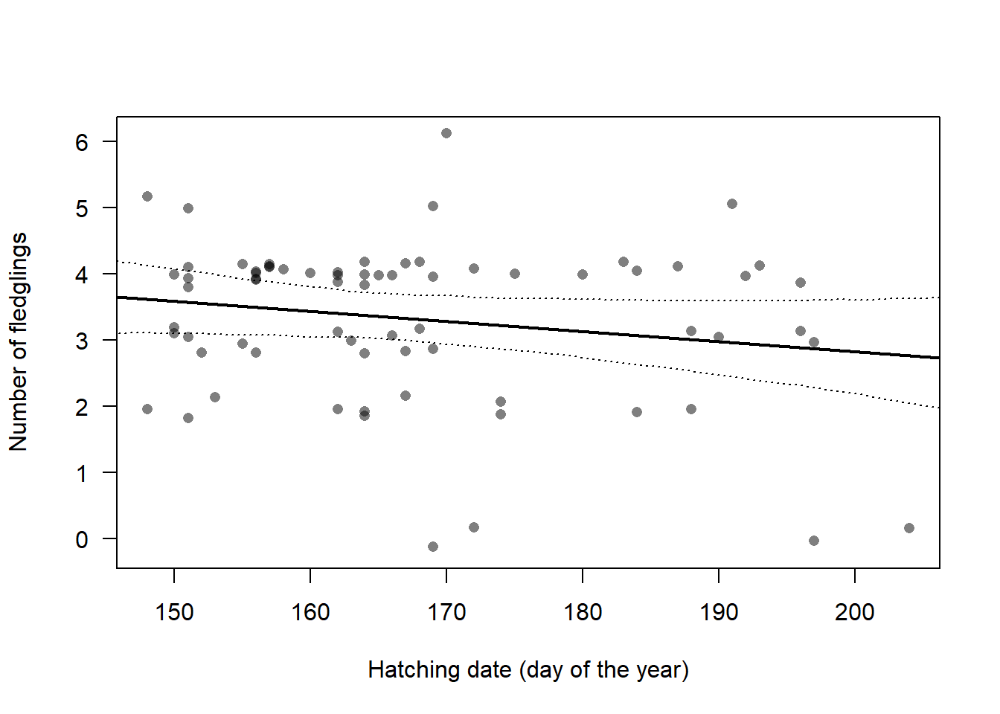

3 Data
## Warning: Paket 'basemaps' wurde unter R Version 4.2.3 erstellt3.1 Environmental data
Environmental variables that have, up to now, been shown to affect population dynamics in Snowfinches are:
- average temperature during the breeding season negatively affect apparent survival of female Snowfinches (Eliseo Strinella et al. 2020, own data)
- date of snowmelt was correlated with the timing of the broods (Schano et al. 2021) and has an effect on nestling growth rate (Ijjas 2022)
- temperature early in the breeding season correlated positively with the length of the breeding season (and thus, number of broods possible) and average temperature late in the breeding season correlated negatively with the length of the breeding season (Niffenegger in prep.).
Average temperature values early and late during the breeding season, timing and duration of snowmelt were obtained from meteoschweiz for the years 1999 to 2021 [reference?].

Figure 3.1: Scatter plot of (standardised) temperature early and late during the breeding season, time and duration of snowmelt. All variables are standardised so that their mean is zero and their standard deviation one.
3.2 Demographic data
3.2.1 Number of broods
The number of broods a female raises in one year is only known for a few study sites. In the Apennine, 26 out of 26 females did a second brood (E. Strinella et al. 2011). In the Pyrenees, Grangé (2008) observed that 50% of the breeding pairs did a second brood. Little is known for the Alps. Aichhorn (1966) found in the Austrian Alps that 9 of 11 breeding pairs did a second brood. In our study in the Swiss Alps, we could detect only 7 females doing a second brood out of 48 females that were reported to breed. However, we may have missed a large part of the second broods because females may leave the study area for the second brood. The proportion of non-breeding females is not known at all.
To more precisely assess the proportion of females that skip breeding, do one or two broods, it would be necessary to track females over the course of the whole breeding season. This has not been done yet.
We use a hierarchical meta-analysis to combine the information from the different studies including our own. To do so, we use a binomial mixed model for the number of females that were reported to do a second brood. The study was used as a random factor to account for among-study variance.

Figure 3.2: Reported proportion of second broods in different studies (point) with 95% uncertainty intervals. The mean (grey) is the average overa all studies, taking different sample sizes into account. The sample sizes, i.e. number of females doing at least one brood, are given for each study.
The resulting average proportion of second broods has a high uncertainty. Its 95% uncertainty interval ranges from 0.19 to 0.97, and the mean is 0.75 (Figure 3.2).
For the population model, we use a proportion of non-breeding females of 0.1 in average and an uncertainty interval of 0.03 to 0.21 to account for the fact that we know little about this demographic parameter.
We derive the two intercepts of a multinomial model from the proportion of non-breeders and the proportion of females with second broods among the breeding females using Monte Carlo simulations to propagate the uncertainty. The proportions defined by the intercept are used for average temperature values.
Citizen science data (ornitho.ch) revealed that during the last 20 years, the Snowfinch breeding season started mid May when June temperatures were high and it started mid June, when June temperatures were low (Niffenegger in prep.). Also, we saw that the end of the breeding season varied between the beginning of August to the end of August depending on July temperature. The warmer in July, the earlier was the end of the breeding season. Thus, both temperature variables (June and July temperature) may affect the number of broods by one brood (for which around one month is needed) along their ranges of values. We derive effect sizes for June and July temperature that correspond to a change by one brood from the lowest to the highest temperature values.
Figure 3.3: Proportion of females with 0, 1 or 2 broods. The 95% uncertainty intervals are indicatd with white dotted lines. They visualise the lack of knowledge on the proportion of breeders and the proportion of second broods, as well as the uncertainty in the temperature effects.
3.2.2 Number of fledglings
There is only one study from the Pyrenees that report the number of fledglings (Grangé 2008). They report an average of 2.4.

3.2.3 Survival
3.2.3.1 Literature view on survival estimates for Snowfinches
There is, as far as we know, only one published study on apparent survival in Snowfinches from the Appennine (Eliseo Strinella et al. 2020). The mark-recapture study took place between 2003 and 2017, and a couple of different mark-recapture models accounting for transients (R. Pradel et al. 1997) were used to estimate annual apparent survival. Depending on the model used, they found annual apparent survival to be between 0.51 and 0.64 for adult females, between 0.44 and 0.54 for adult males and between 0.09 and 0.13 for first year birds. In addition, they found a strong negative correlation between apparent annual survival of adult females and average temperature during the breeding season. In the Austrian Alps, Ambros Aichhorn regularly ringed Snowfinches between 1964 and 2004 in winter. Also in these data, a strong negative correlation between temperature during the breeding season and female apparent survival is visible (own analyses in prep.). The average apparent annual survival was 0.63 (95% 0.56 - 0.70) in males and 0.50 (0.36 - 0.64) in females (Zauner 2022).
3.2.3.2 Own data on survival
In the project at the Swiss Ornithological Institute, we are marking individuals between since May 2015 and we perform systematic searches for marked individuals. Until August 2023 we collected over 8000 resightings and over 900 recaptures (Fig. 3.4). Here, we present first, preliminary, analyses of those data and analyses results. The results are far from being perfect. The analyses serve to get an impression on how well we can estimate apparent survival, to identify gaps in the data and lack of knowledge, so that we can better plan our future research activities.
Figure 3.4: Marking- and capture/resighting data of Snowfinches in the project of the Swiss Ornithological Institute. Individuals are presented on the y-axis, the time is given on the x-axis. Dots are captures (blue as nestling, orange as fledged bird), open circles are resightings and brown crosses are findings of dead birds. Horizontal lines connect recaptures, resightings or findings of the same individual.
We used alpha-numeric plastic rings to enable resightings of birds. Likely due to the cold in winter, the plastic rings break and get lost after some months. Birds without plastic rings only can get recaptured but no longer resighted. To account for that loss of plastic rings, we usesd a multi-state/multi-event model Roger Pradel (2005) adapted so that it accounts for loss of plastic rings (Laake et al. 2014). We divided the study period into 3-months intervals and collated the capture-recapture/resightings into an observation history matrix with a row per individual and plastic ring respectively. When an individual that has lost its plastic ring got a new plastic ring on a recapture, we defined that recapture to be a new release, i.e. we added a new observation history to the data matrix. Following Laake et al. (2014), we defined that the birds can be in 3 different states: 1=alive with metallic and plastic ring, 2=alive with metallic ring only, 3= dead. Transitions between states \(T\) were defined by apparent survival probability \(\phi\) and the probability to lose a plastic ring \(m\).
\[T = \left[ {\begin{array}{ccc} (1-m)\phi_{i,t} & m\phi_{i,t} & 1-\phi_{i,t} \\ 0 & \phi_{i,t} & 1-\phi_{i,t}\\ 0 & 0 & 1\\ \end{array} } \right] \]
Observation events are 1=individual is recorded wearing its plastic ring (resightings and recaptures), 2=individual is recorded without plastic ring (e.g. a recapture), 3=individual has not been seen or recaptured during the 3-months interval. We defined two different probabilities to record an individual during a 3-months interval, one for individuals having a plastic ring \(p^*\) and one for individuals without a plastic ring \(p\). Depending on the state of the individuals, they can be recorded according to the observation matrix:
\[O = \left[ {\begin{array}{ccc} p^* & 0 & 1-p^* \\ 0 & p & 1-p\\ 0 & 0 & 1\\ \end{array} } \right] \]
Apparent survival and recapture/resighting probabilities were estimated independently for each age class (first half year vs. older than half a year), sex and season. We assume that ring loss probability is constant.
The preliminary results presented here, need to be handled with care because important relevant structures are still missing from the model. For example:
Probability that a plastic ring is lost varies among ring series. A random factor for the ring series could be added as predictor for re-sighting probability \(p^*\).
Many individuals are first captured in winter which makes it likely that our data contains a high amount of so-called transients, i.e. individuals that are marked and then move away from our study site. It could be accounted for such transients in the model.
No among-year variance in apparent survival is yet included in the model.
No among-individual variance in apparent survival nor in recapture/resighting probability other than age and sex is included in the model yet.
First year birds are only treated as first year birds until December. Later, it is assumed that apparent survival of these birds is equal to adults (see below).
Resightings made outside our study area could be used to model movements and, consequently, we could get closer to true instead of apparent survival.
We are happy to hear of further thoughts and ideas on how to improve the survival estimation.
We fitted the model using Markov chain Monte Carlo simulations as implemented in Jags (Plummer 2003). The Jags code is provided within this Github project.

Figure 3.5: Three-months apparent survival estimates for juvenile (first half year) and adult Snowfinches in the Swiss Alps. Vertical bars are 95% intervals of the posterior distributions.
The preliminary results indicate that adult apparent survival is lowest in late winter and may be lower in females compared to males in late summer. Apparent survival of the freshly fledged birds in late summer may be underestimated because we assume that during the second half of their first year, their apparent survival equals adult apparent survival, which may not be true. However, after the post-juvenile moult in late summer, first year and older birds are no longer distinguisable. Therefore, of birds captured for the first time in winter, we only know that they are at least half a year old. To be able to estimate separate first year apparent survival for the whole first year, we would need to deal with unidentified ages.
From our preliminary model, we get an annual apparent survival estimate for adult females of 0.45 (95% CrI: 0.39 - 0.51), for adult males 0.54 (0.51 - 0.57), and of first year females 0.14 (0.06 - 0.29), and for first year males 0.09 (0.04 - 0.16).
| Age | Sex | Apparent survival May - Nov | Apparent survival Nov - May |
|---|---|---|---|
| first year | female | 0.24 (0.1 - 0.46) | 0.71 (0.57 - 0.88) |
| first year | male | 0.15 (0.07 - 0.26) | 0.72 (0.65 - 0.79) |
| adult | female | 0.63 (0.5 - 0.79) | 0.71 (0.57 - 0.88) |
| adult | male | 0.75 (0.68 - 0.83) | 0.72 (0.65 - 0.79) |
3.2.3.3 Survival function of the predictive population model
From the survival analyses that are available up to now, we collated a survival function that produces a survival probability for summer and winter for each age and sex class dependent on a standardised environmental variable (Fig. 3.6). Intercepts are taken from the analyses of our own data (presented above) and effect of the environmental variables are taken from the long-term data from Austria (Zauner 2022). For every run of the population model, we draw a random intercept and slope for each age and sex class and we keep that values for the whole population trajectory. In this way, the uncertainty of survival propagates into the uncertainty of the population trajectory.

Figure 3.6: Survival function used in the predictive population model.